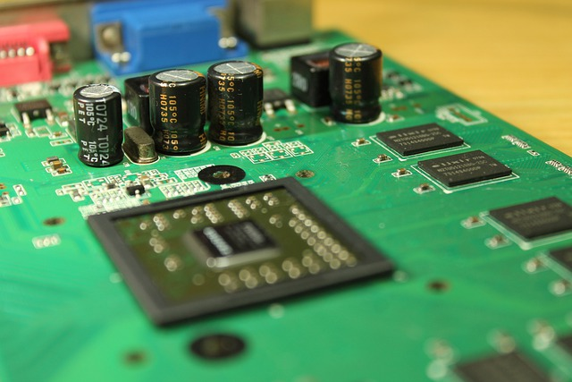
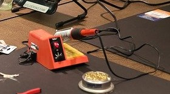
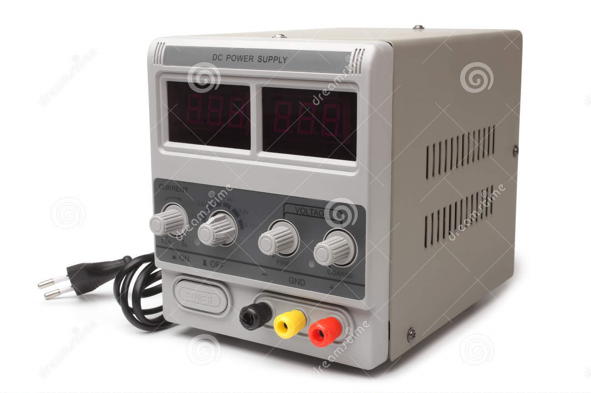

Pcb
Płytka drukowana, płytka obwodu drukowanego – płytka z materiału izolacyjnego z połączeniami elektrycznymi (ścieżkami) i punktami lutowniczymi (zwanymi padami), przeznaczona do montażu podzespołów elektronicznych. Płytki drukowane projektowane są pod kątem budowanego układu elektronicznego i wykonywane są techniką trawienia. Wytwarza się je z płytek pokrytych warstwą miedzi, na które różnymi technikami nanoszony (drukowany) jest wzór ścieżek, a następnie, celem otrzymania pożądanego wzoru, wykonuje się obróbkę chemiczną. Farby pokrywające warstwę miedzi mogą być nanoszone sitodrukiem lub offsetem. Możliwe jest też wykonanie obwodu drukowanego przez nałożenie srebrnych farb przewodzących metodą sitodruku.

Lutownica
Lutownica to narzędzie służące do lutowania. Składa się ona z kolby, służącej jako uchwyt oraz grota, czyli części mającej bezpośredni styk ze spoiwem – lutem. Możemy je podzielić na:
- lutownice transformatorowe,
- lutownice grzałkowe (oporowe),
- lutownice z elektrodami grafitowymi,
- lutownice z elektrodami grafitowymi,
- lutownice gazowe,
- lutownice podgrzewane zewnętrznym źródłem ciepła,

Zasilacz labolatoryjny
Zasilacz laboratoryjny to urządzenie, które daje na swoim wyjściu napięcie o dobrze ustalonej wartości. Co ważne, tę wartość możemy bardzo łatwo regulować, w odróżnieniu od zasilaczy nieregulowanych. Jego zadaniem jest praca w warunkach laboratoryjnych, czyli podczas prowadzenia testów i doświadczeń. Nowo powstały układ elektroniczny może być źle albo w ogóle być błędnym już na etapie projektu, co można wykryć dopiero po zasileniu go. Rolą zasilacza laboratoryjnego jest dostarczenie mu prądu w kontrolowanych warunkach. Przede wszystkim, tego typu przyrząd powinien mieć wbudowane zabezpieczenie przed przeciążeniem oraz miernik poboru prądu. Na wbudowanym amperomierzu możemy, nawet szacunkowo, określić aktualny pobór prądu przez układ. Można wtedy stwierdzić, że układ działa prawidłowo lub nie i w porę go wyłączyć, jeżeli stanie się zbyt wysoki. Ustawiając limit pobieranego prądu możemy mieć pewność, że układ nie ulegnie całkowitemu spaleniu, kiedy tylko coś będzie z nim nie tak. Zasilacz ograniczy wypływający prąd, zmniejszając napięcie wyjściowe albo całkowicie odłączy jego dopływ. Zwykły zasilacz, który nie ma ograniczenia, prawdopodobnie spali układ lub sam ulegnie przy tym uszkodzeniu. Regulacja napięcia Niektóre układy trzeba zasilać napięciem o wartości 3,3V, inne 5V, jeszcze inne 9V. Czasem też chcemy sprawdzić poprawność działania układu w pewnym zakresie napięć, np. przy zasilaniu go ze świeżych oraz mocno rozładowanych baterii. Przyda się do tego płynna regulacja napięcia wyjściowego. Niektóre zasilacze mają wbudowany przełącznik, którym możemy wybrać kilka predefiniowanych wartości, ale tryb regulacji płynnej jest dla elektronika istotniejszy.
